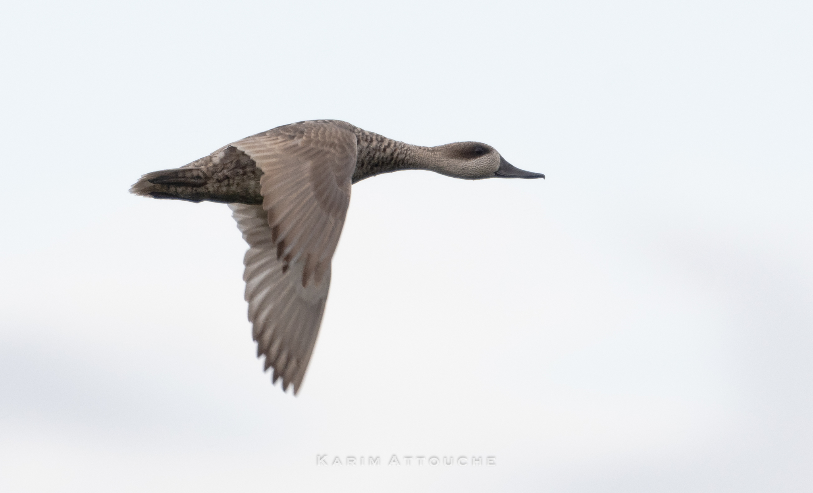

Marmaronetta angustirostris
Identification beyond the marbled pattern
Marbled Duck Marmaronetta angustirostris, also called Marbled Teal, is a small duck about 39–42 cm long. Its sandy grey-brown plumage carries pale spots across the back and flanks, contrasting with a darker eye mask. A slim dark bill and slightly elongated feathers behind the head complete its appearance. Unlike many familiar ducks, the sexes have broadly similar plumage rather than a brightly coloured male and a plainly patterned female.
Males tend to be a little larger, with more developed rear head feathers, but these differences are subtle in the field. Juveniles are generally greyer and show less distinct spotting. Female teal and other small brown ducks can cause confusion at a distance: assess the mask, bill, overall pale appearance and pattern together. In flight, pale underwings and relatively pale secondaries contrast with darker wing tips; a fleeting view alone is not always sufficient.
A specialist of shallow, vegetated water
The species uses shallow wetlands with emergent and submerged vegetation, often brackish, seasonal or semi-permanent. Open feeding spaces among plants are valuable, as are sheltered margins. It can use managed or artificial wetlands, but their suitability depends on water quality, depth and vegetation. A reservoir's mere existence does not guarantee appropriate habitat for a duck adapted to shallow feeding areas.
Its movements reflect changing water conditions. Seasonal wetlands may become highly productive after filling, yet dry too early for breeding to succeed. Conservation therefore requires a connected choice of sites that retain useful habitat at different times. Deepening an entire wetland or clearing all its vegetation can remove the shallow margins on which the species depends, even if water storage increases.
Food and daily behaviour
Marbled Ducks take seeds, other plant material and aquatic invertebrates. Feeding commonly occurs near the surface or in very shallow water rather than through the sustained deep diving associated with pochards. Their fine bills are suited to collecting small food items among vegetation. A bird's use of a particular pool may consequently change as water retreats and accessible feeding areas shift.
Diet studies show differences between ages and places: small aquatic seeds are especially important to adults, while ducklings take proportionally more invertebrates. At Sidi Moussa in Morocco, autumn samples contained many Ruppia seeds together with charophytes and midge larvae. Food composition changed in spring. Larger young have occasionally been seen diving for food, although surface feeding remains much more characteristic of the species.
Nesting and the demands of brood rearing
Nests are concealed near water, beneath dense vegetation or shrubs; breeding accounts also describe nests among emergent aquatic plants. The species can lay a relatively large clutch. SEO/BirdLife reports an average of about twelve eggs in its account, with unusually large clutches potentially involving more than one female. The female incubates for approximately 25–27 days. These values describe the species' biology and should not be interpreted as proof of a particular local breeding event.
The young leave the nest and feed for themselves, usually accompanied by the female; some males also remain with broods. Green’s CSIC synthesis reports flight at 50–54 days in captivity, a reference that should not be read as a measured fledging age for every wild population. Birds can breed at one year old. Late nesting makes persistent shallow water and cover particularly important during the ducklings’ development.
Range, movements and North African populations
The global distribution is fragmented across the Mediterranean region, south-west Asia and parts of Africa. Movements include migration and dispersal in response to wetland conditions. SEO/BirdLife describes movements between Morocco and Andalusia across the Strait of Gibraltar, which may occur outside a simple spring-and-autumn timetable. This flexibility helps birds find water but does not make wholesale habitat loss harmless.
Morocco, Algeria and Tunisia form part of its established western breeding range, as documented by international waterfowl reviews. They also hold birds outside the nesting season, with local occupation depending on hydrology. Libya requires a more specific statement: Etayeb and colleagues established breeding at Mallaha, Tripoli, from two ducklings found in June 2012 and identified genetically. Their 2014 paper is firm evidence for that event, not a measure of the present size or regularity of Libya's breeding population.
Iraq and other Arab countries
Iraq is important for both local breeding and wintering. Salim and colleagues' national review describes resident breeding in central wetlands and a wider distribution in the southern marshes. The KBA account for Dalmaj independently identifies it as a major breeding area. Counts and conditions at individual marshes can change greatly, so older assessments of international importance should not be mistaken for current population totals.
AEWA lists Lebanon, Saudi Arabia, Kuwait, Qatar, Bahrain, the United Arab Emirates and Oman as vagrant countries. Oman's official bird list likewise treats it as a vagrant. These classifications differ fundamentally from Iraqi or North African breeding status. AEWA records native occurrence in Syria, Jordan and Egypt, but that broad category alone does not establish a regular season or breeding population in each country. National and site-specific evidence is needed before making stronger claims.
Conservation and field records
The 2022 IUCN Red List assessment classifies Marbled Duck globally as Near Threatened (NT). Drainage, unsuitable water management, pollution and loss of vegetation affect the food and shelter needed by adults and ducklings. Protecting a single wetland is not enough if it repeatedly dries or becomes isolated from alternative sites. Successful management needs to follow both the annual water cycle and the longer alternation of wet and dry years.
Watch from a distance and avoid driving broods into open water. Record the habitat and behaviour as well as numbers, and document ducklings without approaching their refuge. A dated record from an unexpected country is valuable, but it should be assessed as an individual occurrence before being used to revise maps of breeding or regular migration.
SEO/BirdLife: Marbled Duck · Green, CSIC: Marbled Duck reproductive biology · Green, CSIC: Marbled Duck diet · AEWA: Marbled Duck country occurrence · Etayeb et al., 2014: first Libyan breeding evidence · Salim et al., 2012: birds of Iraq · Key Biodiversity Areas: Dalmaj, Iraq · Oman Bird Records Committee: official bird list · BirdLife International (2022): IUCN Red List assessment, Marbled Duck · Aghababyan et al. (2025): Marbled Teal conservation status
Image available under CC0.